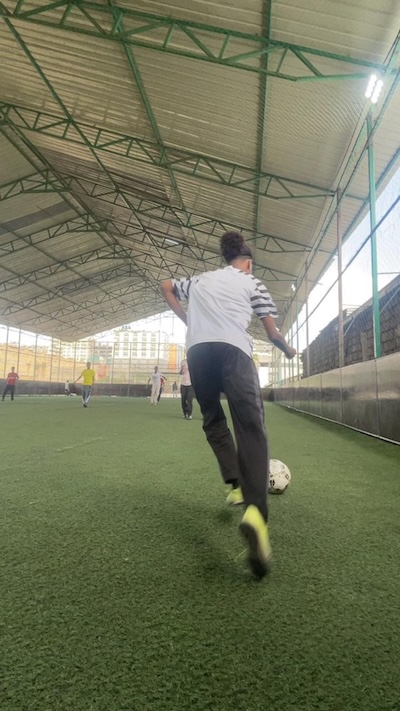

Football is more than a sport to me. I follow the Premier League and support Chelsea. My favorite players include Eden Hazard, Cole Palmer, and Mason Mount. I enjoy the creativity, skill, and intensity of the game.
Playing football is one of my favorite activities. It helps me stay active, improve my teamwork skills, and enjoy competition. I enjoy the fast pace of the game and the creativity involved in making plays.
